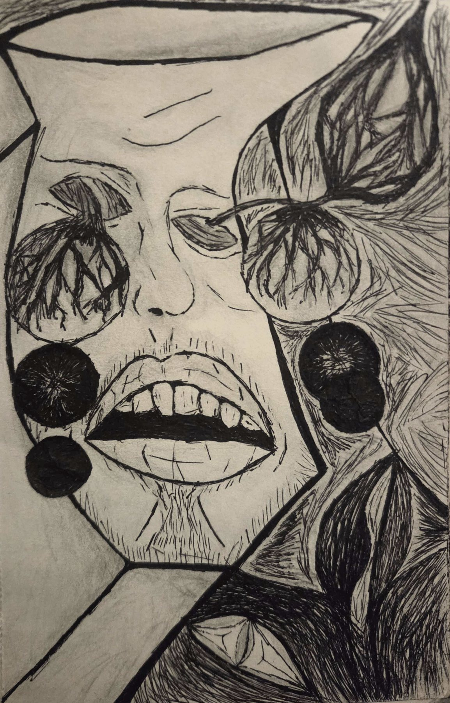

Aiming the glance low, the razor cuts through the film of the static. Thin paper walls called sanity, they are peeled. One. Sound. Unmistakable sound.
It is the noisy quiet that nothings by the window, like a lullaby.
Pulse, it is a still fainting speak, which God speaks through, the drumming dummy heart. Birds chirp like it, the trees sway to it, and the talk of human tries to pretend it isn’t it. One and the same, saveless from itself as itself, that is the demon hiding under the bed of the mind which is hidden from ourselves. We pushed down the demon, down the stairs of the basement, debasing it as the calling deception who is said to hide God from the soul.
Kether, in preparation for his journey into the Blindfold, engages in these questions with a violent charge that disregards his self. He tries to leave no rock unturned in his ultimate form of the King, including that rock that is his soul, which thirteen eternities sit atop of, in the reminders feeling illusional. Cascading the self-defense, the walls come down, and the port is open to every kind. His silence is where it happens.
There, where the voices are played by a lonely God, the creeping hold is made aware, the one that doesn’t mimic the sounds, but the one which holds the strings to its collection. Kether looks deep into the cup of water afar. In the moment, dark reflects in it, where he sees the abyss made of this real metaphor. Of the metaphor, of the world held and speaking as a God talking to itself, there is a world in the drink that echoes this one, whose reality is lower than it. This is the furthest out sight in a glance on the inside of another small. In a surrender, he lets the black horse in…
Holding onto the picture of the world, he cracks, like a vase. Skin is run under in a swarm of constricting barbed wire. Music of a flute, the notes a location the same, where he plays the lullaby, no longer symbolic for Kether. Bells and chimes say a longing for a while with every ring. Double talk: the instruments are warning of help in the language of the cult choke of hell.
Being unravels like an abstract equation, both a map and schematic with locations and moments at the organs and words. It touches while making an out with simultuity, like forbidden becoming through and from the flesh. Gravity pulls the components away, coldly stripping the human machinery of its dignity, like a surgery unraveling him, Kether.

When the world was seen in the cup, so it becomes that he holds a drink also. Fluid swirls with his cold head, swashing around in a splashing that is heard as memories of consciousness. It spills at the top of the head from him being so full of himself, and it glides into the tear duct like a tailored sleeve, running his mind on fire. The staged ideas of family haunt into every corner of the vase of head. Kether’s eyes roll out the head with a blindness, all from the concept of love that he never knew he needed to breathe. All of a sudden, the image of a woman jumps out at him, someone he loves. There is a kicking scream at the loss of it that cannot manifest in the body architectured. With nowhere to recoil, the soul drifts into reflections of reflections, seeing into the sharp-cut fragments which mirror a resemblance of the room from fifty-six seconds ago.
Every sight of glass or metal that shines the dark of another part of the room, it all shows himself poured out. As he spills, so do all those lives he took pleasure in, like God, and now they leave the head they hid inside of, showing themselves to him like a mess of spirit. What remains of Kether’s face becomes another person, made disproportioned into something completely unlike him, and the appearance is ugly to him. What if all those lives spilt out over the floor can see his ugly? The small thought brings out his humanity in the deconstruction; it shutters his eyes if he could find them on his outside of self, but they belong to the him far away in the reflection.
His dad can see this… His dad he murdered. Fear of death is lost; only the fear of living makes the air rattle, rattling like the buzzing of his eyes disconnected. Kether just wants to lay his head, to change his mind, to make it stop, to not be forced. Overstimulation. The Blindfold is opened, and he didn’t even will it to be this moment, he thought. The Blindfold Maiden catches him in the reflection of the spill out his abasal of vased head. A thirteenth eternity is coming over him in the contrahold.